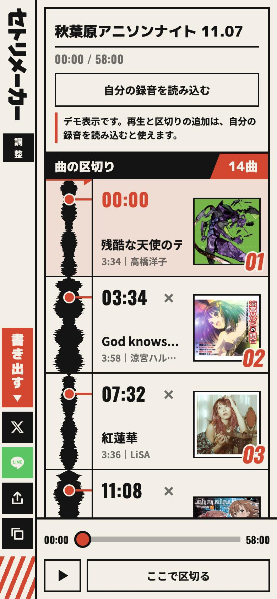
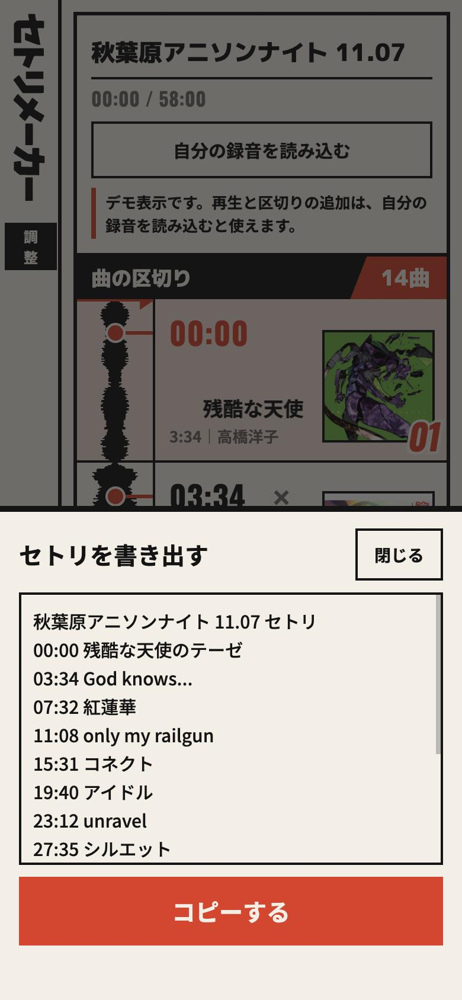

イベントの録音を入れると、曲の切れ目の候補を出します。曲名を入れて、セトリとして書き出せます。
デモを触ってみる読む前に触ってOKです。スマホでそのまま動きます。
イベントのあと、録音を聴き返して曲が変わった時刻をメモし、曲名を調べて、並べて、投稿する。セトリを残すには、この作業が毎回かかります。

1録音を読み込むと、曲ごとに区切った一覧が出ます。
2聴きながら「ここで区切る」で足して、曲名を入れます。

3「書き出す」で、時刻つきのセトリになります。
録音ファイルは、お使いのブラウザの中だけで解析します。サーバーには送りません。外に出る通信は、ジャケットを探すときの曲名と、書体の読み込みだけです。